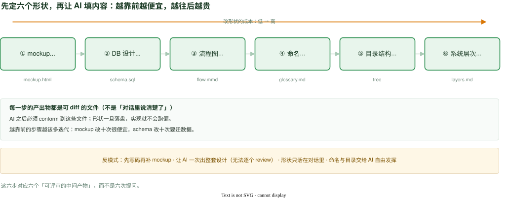

Vibe Coding：用 AI 造系统的六步骨架
vibe coding
system design
workflow
主张：先定形状，再填内容
vibe coding 快，不是因为 AI 会写代码，而是因为改「形状」的成本几乎为零——改完形状，写码仍然是慢的。
所以正确的用法是：在写实现之前，用 AI 把六个形状快速迭代到稳定；形状落盘之后，再让 AI 按形状填内容。反过来，一旦开始写实现，形状就变贵了——每改一次都要返工代码、迁移数据、重命名一堆东西。
这六步的价值不在「问了 AI 六个问题」，而在于产出了六个可评审、可 diff 的中间产物。
六步骨架

| 步 | 产出物 | 固定住什么 | 为什么贵 |
|---|---|---|---|
| ① mockup | mockup.html | 界面、信息密度、交互路径 | 界面一改，数据与接口跟着改 |
| ② DB 设计 | schema.sql + 关键查询 | 实体、关系、时间维度 | 最难改，历史数据要迁移 |
| ③ 流程图 | flow.mmd | 时序、状态、失败分支 | 流程漏一步，实现漏一片 |
| ④ 命名 | glossary.md | 领域词汇（名词 + 动词） | 命名漂移会传染整个代码库 |
| ⑤ 目录结构 | tree | 模块边界 | 边界错了，后面全靠 import 打补丁 |
| ⑥ 系统层次 | layers.md | 依赖方向 | 层次乱了，改一处动全身 |
顺序的依据：从「人一眼能判断对错」到「只能靠推演判断」。mockup 谁都看得出不对；分层对不对，往往要写完才知道。所以越靠前越值得反复改。
每一步怎么做
① 让 AI 出 mockup
- 要一个能点的 HTML，不是 Figma 稿、也不是文字描述。三屏以内，只画主流程。
- 提示要点：说明这是哪个系统的哪个页面、有哪些区域、每张卡片上有什么信息、每张卡挂哪些按钮。
- 验收：不用解释就能看懂主流程；不看代码就知道点哪里会发生什么。
这一步最容易被跳过，代价也最大：界面定不下来，后面的表结构和接口全在猜。
② 让 AI 做 DB 设计
- 先给「要回答的问题」，不要先给表。让 AI 从问题反推实体与关系。
- 要求：每个界面元素都能追到来源；状态变化单独建模（时间维度），不要用字段覆盖历史。
- 要它同时给出 3–5 条关键查询，能跑通「这个页面怎么拼出来」。
- 验收：随便挑一个界面上的字段，能说出它来自哪张表哪条记录。
③ 让 AI 出流程图
- 要 mermaid，一屏看完；必须画失败分支和「人需要确认」的节点。
- 验收：每个「人会犹豫怎么办」的地方，图上都有分支。
④ 让 AI 做好函数命名
- 先定 10 个核心名词 + 5 个核心动词写进 glossary，禁止同义词（`ticket` 和 `issue` 只能留一个）。
- 函数名 = 动词 + 名词：
refreshPermissions、scanJiraDaily；避免handleXxx、processXxx、doXxx。 - 验收：代码里出现第二个同义词，说明词汇表没定好。
⑤ 定好开始的目录结构
- 按「变化的原因」分（feature-first），不按技术层分（不是
controllers/ services/ utils/）。 - 一个插件 / 一个功能一个目录，目录自带它的数据源、后台任务、UI。
- 验收：改一个功能只动一个目录。
⑥ 定好系统的层次
- 写死依赖方向（如 UI → domain → data，禁止反向），并写进
AGENTS.md。 - 验收：能用一句话说出每层职责；AI 能自己判断「这段代码该放哪」。
为什么这六步有效
| 机制 | 效果 |
|---|---|
| 顺序 | 从具体到抽象、从便宜到昂贵，返工永远发生在最便宜的那一层 |
| 落盘 | 每一步都有文件，AI 每次都能 conform；新 session 不会重来（呼应 context-recording） |
| 可评审 | 形状比实现好 review；错在形状阶段改，成本是写码完成后的百分之一 |
反模式
| 反模式 | 后果 |
|---|---|
| 先写实现，再补 mockup | 形状被实现绑架，界面变成「代码能做成什么样」 |
| 让 AI 一次出整套设计 | 六步混在一起，无法逐个 review，错也不知道错在哪一步 |
| 形状只活在对话里 | 下个 session 就丢，等于没定过 |
| 命名与目录交给 AI 自由发挥 | 词汇与边界持续漂移，越写越像「另一个项目」 |
与其他笔记的关系
| 笔记 | 管什么 |
|---|---|
| Harness Engineering | 让概率模型稳定输出（模板、skill、context、memory） |
| 使用 LLM 的 Best Practice | 日常技巧（skill 化、脚本降本、领域知识库） |
| OneWorkbench | 这套手法的实践出处：插件 manifest、run 记录、分层都是先定形状再填内容 |
| 在 Repo 里记录上下文 | 让这六个产物在跨 session 时活下来 |
一句话收束：vibe coding 的对手不是「AI 写得不够好」，而是「形状没定就动手」。先把六个形状钉死，再让 AI 高速填充。